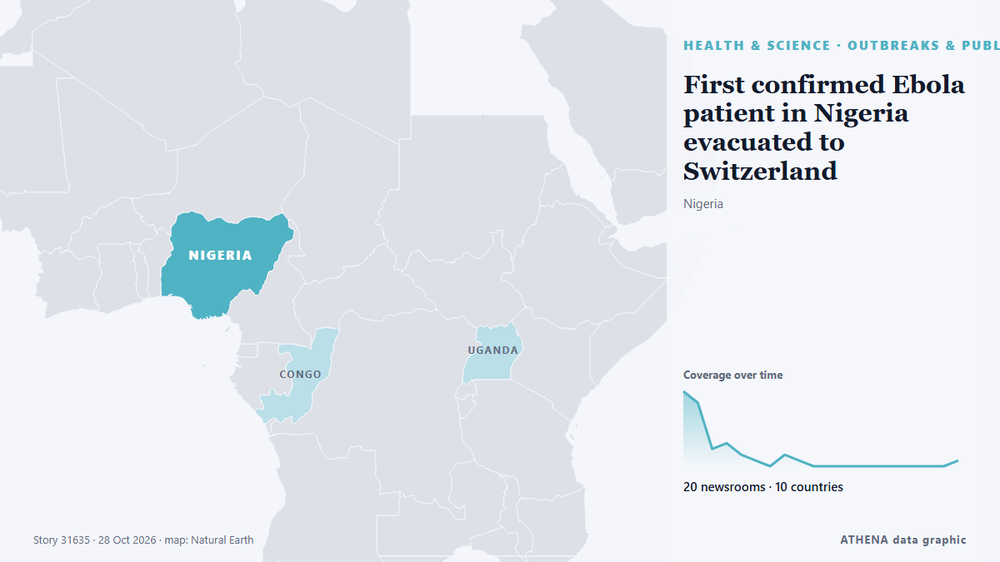

First confirmed Ebola patient in Nigeria evacuated to Switzerland

Abuja, Nigeria AP — A Swiss woman being treated for Ebola in Nigeria was medically evacuated to Switzerland with her husband Monday, officials said, as Nigerian authorities continued monitoring 52… из Egypt Independent
Независимые источники: 20 изданий в 10 странах, с 26 окт.; первым сообщил The Straits Times; освещение идёт на спад. ATHENA оценивает риск как повышенный (5.1/10), прежде всего из-за тяжести описываемого ущерба и географического и отраслевого охвата. Уверенность — 91 % (высокая); подтверждают независимые источники: 20 изданий, средняя надёжность источников — 76 %. Кто сообщал: 21 СМИ в стране Нигерия · Nigeria, 2 СМИ в стране Соединенные Штаты · United States, 2 СМИ в стране Великобритания · United Kingdom. Освещение шло с 26 окт. по 28 окт., 57 ч.
Почему это важно: События в здравоохранении и науке могут менять риски для общественного здоровья, приоритеты исследований и регулирование.
Что изменилось: 1 новое сообщение за 24 часа до 28 окт..
Первый заголовок: 1st confirmed Ebola patient in Nigeria evacuated to Switzerland
Заголовки приводятся на английском языке, как они были опубликованы.
Коротко в цифрах
Отобрано, оценено и написано по опубликованной методологии ATHENA. Ни один редактор не вмешивается в отдельные события. Как это создаётся ›
| 26 Oct 08:55 UTC | 13 |
|---|---|
| 26 Oct 11:55 UTC | 11 |
| 26 Oct 14:55 UTC | 3 |
| 26 Oct 17:55 UTC | 4 |
| 26 Oct 20:55 UTC | 2 |
| 26 Oct 23:55 UTC | 1 |
| 27 Oct 02:55 UTC | 0 |
| 27 Oct 05:55 UTC | 2 |
| 27 Oct 08:55 UTC | 1 |
| 27 Oct 11:55 UTC | 0 |
| 27 Oct 14:55 UTC | 0 |
| 27 Oct 17:55 UTC | 0 |
| 27 Oct 20:55 UTC | 0 |
| 27 Oct 23:55 UTC | 0 |
| 28 Oct 02:55 UTC | 0 |
| 28 Oct 05:55 UTC | 0 |
| 28 Oct 08:55 UTC | 0 |
| 28 Oct 11:55 UTC | 0 |
| 28 Oct 14:55 UTC | 0 |
| 28 Oct 17:55 UTC | 1 |
| 26 Oct 08:58 UTC | 3.9 |
|---|---|
| 26 Oct 09:00 UTC | 5.0 |
| 26 Oct 18:01 UTC | 5.5 |
| 26 Oct 19:22 UTC | 6.0 |
| 27 Oct 06:11 UTC | 5.3 |
| 28 Oct 18:16 UTC | 5.1 |
Откуда эти цифры
Значимость
Риск
Уверенность
Освещение — кто сообщил и когда
заголовок в оригинале · открывает источник- The Straits Times · Сингапур · SingaporeNigeria's Ebola patient on medical evacuation flight to Switzerland, condition stable
- Premium Times · Нигерия · NigeriaUpdated: Ebola: Nigeria’s index patient evacuated to Switzerland, health minister confirms
- Channels TV · Нигерия · NigeriaNigeria’s Index Ebola Patient, Husband Evacuated To Switzerland – Pate
- Daily Trust · Нигерия · NigeriaNigeria’s lone Ebola patient evacuated to Switzerland
- Vanguard · Нигерия · NigeriaEbola: Suspected index patient evacuated from Nigeria by air ambulance – Report
- Vanguard · Нигерия · NigeriaEbola: FG confirms evacuation of Nigeria’s index patient, husband to Switzerland
- Daily Trust · Нигерия · NigeriaNigeria temporarily free of Ebola
- Punch · Нигерия · NigeriaUPDATED: Ebola patient evacuated to Switzerland with spouse — Minister
- Asharq Al-Awsat (English) · Саудовская Аравия · Saudi ArabiaNigeria Evacuates Ebola Patient to Switzerland
- The Local Switzerland · Швейцария · SwitzerlandNigeria evacuates Ebola patient to Switzerland
- AllAfrica · AFRNigeria: Ebola - Nigeria's Index Patient Evacuated to Switzerland, Health Minister Confirms
- Vanguard · Нигерия · NigeriaNigeria has no Ebola case after patient’s evacuation to Switzerland – WHO
- Jamaica Observer · Ямайка · JamaicaNigeria evacuates Ebola patient to Switzerland
- Premium Times · Нигерия · NigeriaEbola: Nigeria has no active case after patient’s evacuation — WHO
- AllAfrica · AFRNigeria: Nigeria Has No Ebola Cases After Patient's Evacuation to Switzerland - WHO
- News Agency of Nigeria · Нигерия · NigeriaNigeria’s Ebola patient evacuated to Switzerland – Pate
- Africanews (English) · AFRNigeria evacuates only confirmed Ebola case to Switzerland
- Africanews (English) · AFRNigeria evacuates Ebola patient to Switzerland, tracks 53 contacts
- News Agency of Nigeria · Нигерия · NigeriaWHO says Nigeria has no Ebola cases after patient’s evacuation to Switzerland
- ABC News (International) · Соединенные Штаты · United StatesSwiss Ebola patient in Nigeria evacuated to Switzerland
- Punch · Нигерия · NigeriaNigeria has no active Ebola cases after patient’s evacuation — WHO
- Punch · Нигерия · NigeriaNigeria Ebola-free after patient’s evacuation to Switzerland — WHO
- News Agency of Nigeria · Нигерия · NigeriaWHO says Nigeria has no Ebola cases after patient’s evacuation to Switzerland
- Vanguard · Нигерия · NigeriaAfter patient’s evacuation, is Nigeria Ebola-free? – WHO clarifies
- Sky News (World) · Великобритания · United KingdomWoman treated for Ebola in Nigeria is evacuated to Switzerland
- The Independent · Великобритания · United KingdomWoman treated for Ebola in Nigeria evacuated to Switzerland
- The Jerusalem Post · Израиль · IsraelNigeria Ebola patient and spouse admitted to hospitals in Switzerland
- Vanguard · Нигерия · NigeriaEbola patient arrives in Switzerland, as Nigeria sustains surveillance
- CBC News · Канада · CanadaNigeria Ebola patient flown to Switzerland, Congo health worker killed as 4 countries deal with outbreak
- Daily Trust · Нигерия · NigeriaSwitzerland has confirmed arrival of evacuated Ebola patient – Health minister
- Premium Times · Нигерия · NigeriaEvacuated Ebola patient, husband arrive in Switzerland
- Premium Times · Нигерия · NigeriaEbola: Why Nigeria evacuated patient to Switzerland – NCDC
- Punch · Нигерия · NigeriaEbola: Patient arrives Switzerland, contact tracing continues
- Channels TV · Нигерия · NigeriaEbola: Patient Arrives Switzerland, Nigeria Continues Contact Tracing, Containment — Pate
- AllAfrica · AFRNigeria: Why Nigeria Evacuated an Ebola Patient to Switzerland
- Egypt Independent · Египет · EgyptFirst confirmed Ebola patient in Nigeria evacuated to Switzerland
- The New York Times (World) · Соединенные Штаты · United StatesNigeria’s Ebola Patient Evacuated as Investigators Press for Answers